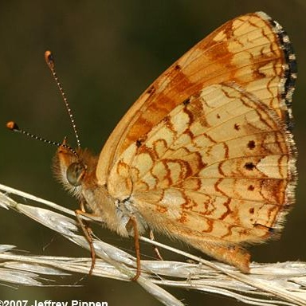
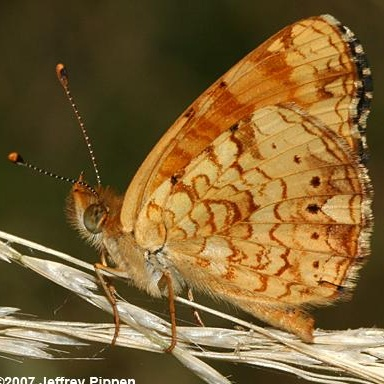

Phyciodes mylitta
- Common names
- Mylitta Crescent
Thistle Crescxent - Family
- Nymphalidae
- Family common name
- Brush-footed butterflies
- On the wing
- L February to M October, peaks in M May and July - August.
2 - 3 generations. - Habitat
- Dry fields and wet meadows, woodland openings and mountain canyons, to treeline.
- Larval host:
- Thistles.
- Nectars on:
- Thistles, goldenrod, tansy ragwort, asters, red clover and others.
- Abundance
- U-C